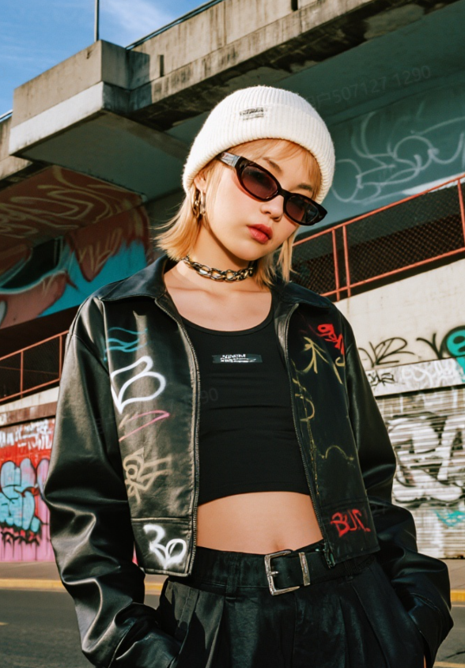
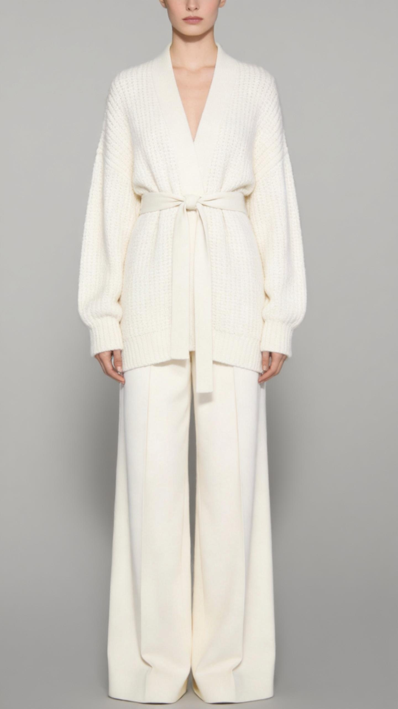
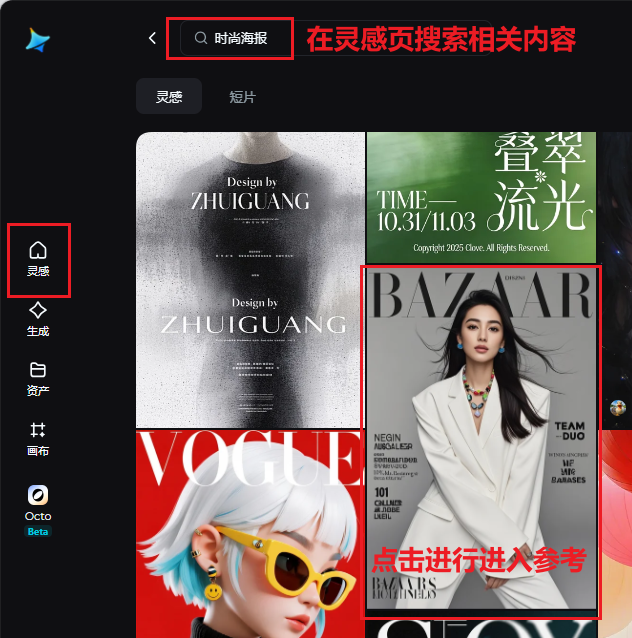
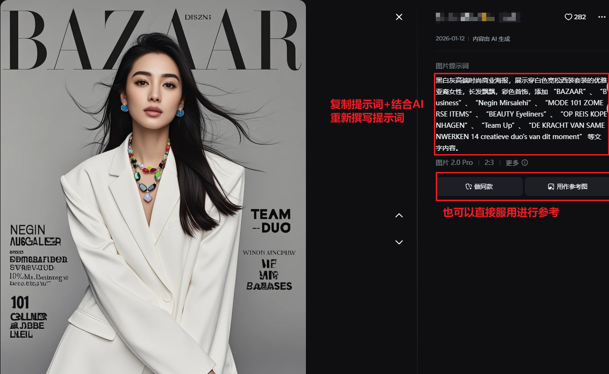
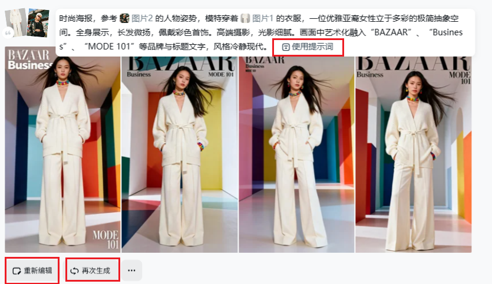
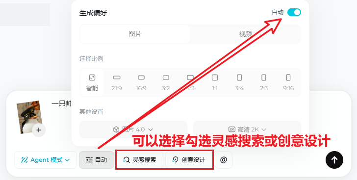
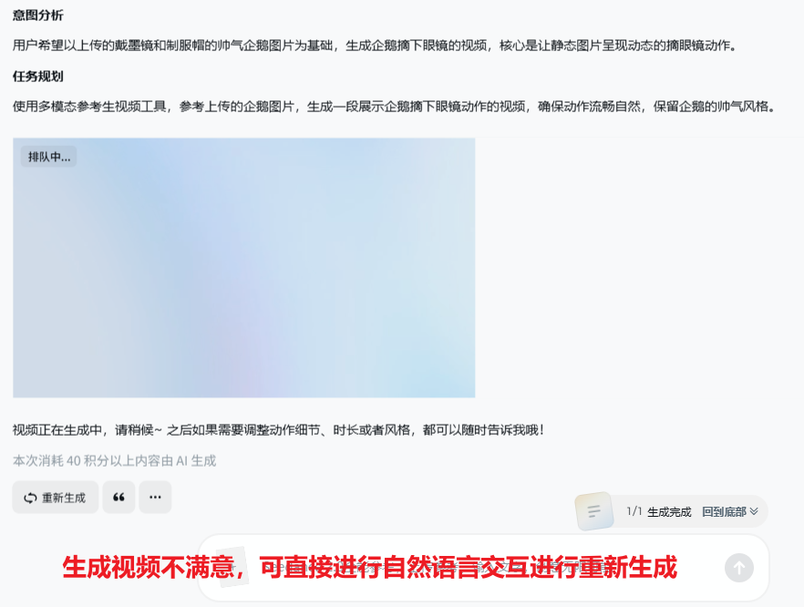
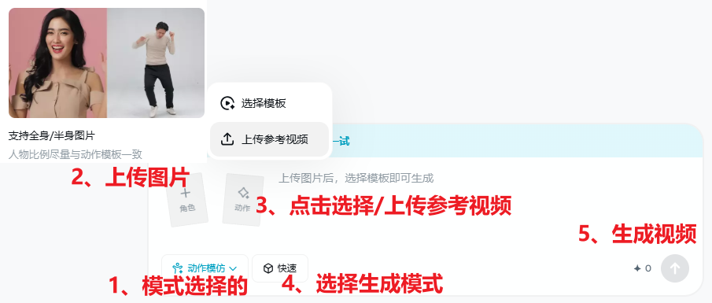
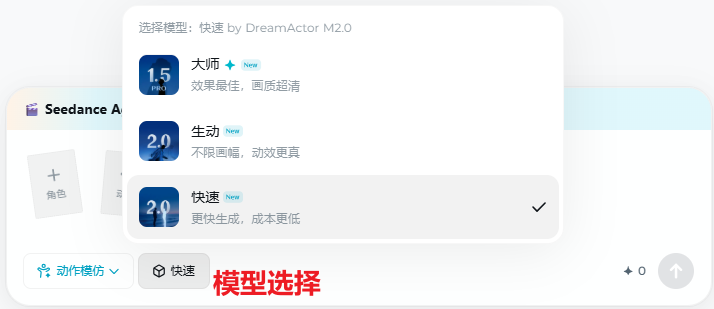
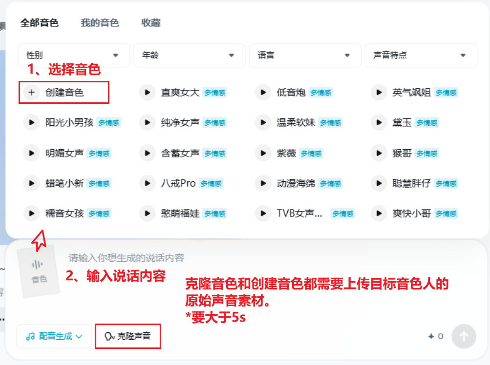

📚 手册目录
第一章：即梦AI平台简介
了解这款工具是什么、能做什么，以及与同类产品的差异
🏢 什么是即梦AI？
即梦AI（英文名 Dreamina）是字节跳动旗下剪映团队开发的一站式生成式AI创作平台，官网地址为 jimeng.jianying.com（国内版）。它以"想象力世界的相机"为定位，将 AI 绘画、AI 视频生成、智能画布、故事创作等能力集成在一个平台，是目前国内功能最全面、中文体验最好的 AIGC 创作工具之一。
即梦AI = AI绘画平台 + AI视频工厂 + 智能画布 + 内容社区，形成从创意到发布的完整闭环
📊 与主流工具对比总览
以下将主流工具分为海外工具与国内工具两大阵营，感兴趣的小伙伴可以自行摸索，全面了解各个产品的核心差异，在不同场景中做出最优选择。相关收费及体验政策参考官方文档。 (*各平台各具特色，仅个人判断，仅供参考，同时模型更新较快，部分平台说明可能存在出入)
🌍 海外主流工具
| 工具 | 类型/定位/特点 | 初步评分 | 详细说明 |
|---|---|---|---|
| 即梦AI ⭐ | 国内一站式 AIGC · 剪映团队 特点：功能最全、国内合规、图+视频一体、抖音生态 | 图 ⭐⭐⭐⭐⭐ 视 ⭐⭐⭐⭐⭐ 中文 ⭐⭐⭐⭐⭐ | 将 AI 绘画、AI 视频、智能画布与社区整合在同一平台，中文理解与本地化体验突出，适合国内创作者从创意到发布全链路。 |
| Midjourney | Discord 图像生成平台 特点：图片艺术感极强、风格迁移、中文理解弱 | 图 ⭐⭐⭐⭐⭐ 视 ⭐⭐⭐ 中文 ⭐⭐ | 全球最具影响力的 AI 图像平台，以独特的艺术审美和极强的风格化能力著称。基于 Discord 运营，通过 /imagine 指令生成图像。目前仅专注图片，不支持视频生成。 |
| Runway Gen-3 Alpha | 专业 AI 视频生成工具 特点：视频物理感真实、商业级画质、价格偏高 | 图 ⭐⭐⭐ 视 ⭐⭐⭐⭐⭐ 中文 ⭐⭐ | 好莱坞电影/广告从业者广泛使用的 AI 视频工具，Gen-3 Alpha 拥有优秀的物理运动理解和画面质感。支持图生视频、文生视频、视频风格化，是海外视频 AI 领域的标杆产品。 |
| Pika 2.0 | 创意艺术风格视频生成 特点：特效创意丰富、上手简单、中文支持弱 | 图 ⭐⭐⭐ 视 ⭐⭐⭐⭐ 中文 ⭐⭐ | 主打创意艺术风格视频生成，2.0 版本引入 Pikaffects（特效系统），支持爆炸、融化、挤压等创意特效变换。界面简洁，上手门槛低，适合社交媒体短视频创作者。 |
| DALL-E 3 (OpenAI) | 集成于 ChatGPT 的图像生成 特点：指令理解精准、文字渲染好、国内访问受限 | 图 ⭐⭐⭐⭐ 视 ❌ 中文 ⭐⭐⭐ | OpenAI 出品，深度集成于 ChatGPT，通过对话即可生成图像，最大优势是对自然语言指令的理解极其精准，支持文字内容准确渲染。但生成风格偏「平滑」，艺术风格化程度不如 Midjourney，国内访问需梯子。 |
| Stable Diffusion | 开源生态 · Stability AI 特点：完全免费开源、本地部署可控、上手门槛高 | 图 ⭐⭐⭐⭐⭐ 视 ⭐⭐⭐ 中文 ⭐⭐ | 全球最大规模的开源 AI 图像生态，由 Stability AI 维护，拥有庞大社区（Civitai 等模型库）。可本地部署，无审查限制，支持 LoRA / ControlNet 等高度精准控图扩展。上手门槛较高，需一定技术背景，SDXL、SD3 等多版本持续迭代。 |
| Canva AI (含 Leonardo) | 设计平台 · 已收购 Leonardo AI 特点：设计工作流完整、角色一致性强、适合非技术用户 | 图 ⭐⭐⭐⭐ 视 ⭐⭐ 中文 ⭐⭐⭐ | Canva 于 2024 年收购 Leonardo AI，将其强大的图像生成能力（精准角色一致性、游戏资产生成）整合进 Canva 设计平台。Leonardo AI 原本以精准的人物形象控制和游戏概念艺术著称。收购后用户可在 Canva 中直接调用 AI 生成，配合模板、排版、一键发布形成完整设计工作流。 |
| Adobe Firefly | Adobe 创意云 AI 生成套件 特点：商业版权安全、PS/AE 深度集成、企业首选 | 图 ⭐⭐⭐⭐ 视 ⭐⭐⭐ 中文 ⭐⭐⭐ | Adobe 官方 AI 生成工具，完全集成于 Photoshop、Illustrator、Premiere 等软件中，支持生成式填充、背景扩展、文字转图、矢量图生成等。核心优势是商业版权安全（仅用 Adobe Stock 授权素材训练），以及与专业设计软件的无缝协作，是企业级商业设计的首选。 |
| Luma AI (Dream Machine) | 高物理真实感视频生成 特点：物理效果顶级、3D 重建能力、免费额度有限 | 图 ⭐⭐⭐ 视 ⭐⭐⭐⭐⭐ 中文 ⭐⭐ | Luma AI 的 Dream Machine 以极强的物理世界理解能力著称——流体、光影、布料、重力效果高度真实。Ray2 版本进一步提升了角色一致性和运动流畅度。同时支持 NeRF 3D 重建，可将普通视频转化为 3D 场景，是视觉特效和 3D 内容创作的利器。 |
| Google Veo 2/3 | 谷歌 DeepMind 旗舰视频模型 特点：视频质量业内顶尖、音视频同步（Veo3）、国内访问受限 | 图 ⭐⭐⭐ 视 ⭐⭐⭐⭐⭐ 中文 ⭐⭐ | 谷歌 DeepMind 发布的旗舰视频生成模型，Veo 2 已超越 Sora 成为业内公认视频质量最高的模型之一，支持最高 4K、分钟级视频生成，对镜头语言（Panning、Timelapse 等）理解极为精准。Veo 3 更进一步支持原生音效和对白生成（视音频同步），正通过 Google Flow 和 Gemini 平台逐步开放。 |
🇨🇳 国内主流工具
| 工具 | 类型/定位/特点 | 初步评分 | 详细说明 |
|---|---|---|---|
| 即梦AI ⭐ | 国内一站式 AIGC · 剪映团队 特点：功能最全、中文体验最佳、抖音生态打通 | 图 ⭐⭐⭐⭐⭐ 视 ⭐⭐⭐⭐⭐ 中文 ⭐⭐⭐⭐⭐ | 将 AI 绘画、AI 视频、智能画布与社区整合在同一平台，中文体验与国内合规最优，与抖音/剪映生态深度打通。 |
| 快手可灵 AI | 快手出品 · 图片+视频生成 特点：物理动态逼真、超长视频、国内合规 | 图 ⭐⭐⭐⭐ 视 ⭐⭐⭐⭐⭐ 中文 ⭐⭐⭐⭐⭐ | 快手旗下的 AI 视觉创作平台，核心视频模型在国内与即梦并列第一梯队。以高动态物理模拟（流体、烟雾、布料）见长，支持最长 3 分钟超长视频生成，在写实人物动态和动作连贯性方面表现出色，深受国内短视频创作者喜爱。 |
| 豆包（字节跳动） | 字节旗下 AI 助手 + 生图 特点：对话式生图、零门槛上手、与即梦同源 | 图 ⭐⭐⭐⭐ 视 ⭐⭐⭐ 中文 ⭐⭐⭐⭐⭐ | 字节跳动旗下的 AI 助手应用，以大语言模型交互为主，同时内置了图像生成功能（调用即梦同源模型）。豆包的优势在于对话式 AI + 生图的无缝结合，用户可以在聊天中直接描述需求生成图像，适合对 AIGC 工具不熟悉的普通用户入门。 |
| 阿里通义万象 | 阿里云 · 企业级多模态生成 特点：企业 API 能力强、电商生态深度整合、阿里生态协同 | 图 ⭐⭐⭐⭐ 视 ⭐⭐⭐⭐ 中文 ⭐⭐⭐⭐⭐ | 阿里巴巴旗下的多模态大模型平台，包含文生图（Wanx 系列）、文生视频（WanVideo）、图生图、风格迁移等全套能力。企业级 API 接入能力强大，与阿里云、钉钉、淘天商业生态深度打通，是电商内容生产、企业数字化创作的重要工具。 |
国内用户日常创作首推即梦AI（功能最全）或快手可灵AI（视频物理感更强）；需要企业级 API 对接选通义万象；纯海外生态推荐Midjourney（图片艺术感）或Google Veo（视频顶级质量）；开源自部署选Stable Diffusion；商业设计工作流选Adobe Firefly。
第二章：快速上手
注册账号、界面导航、基础操作流程 — 10分钟开始第一个作品
📋 注册与登录
访问官网
浏览器打开 jimeng.jianying.com；或应用商店安装即梦 App（iOS / Android）。
账号注册
手机号注册，或 抖音账号一键登录（推荐，网页与 App 数据互通）。
每日免费积分
每日登录领取免费积分（约 60–100，当日 24:00 失效）；新用户另有体验积分。
探索灵感社区
左侧进入 「灵感」：浏览发现、短片、活动，可用 搜索；点开作品可查看 / 复用生图提示词。
🗺️ 界面导航地图
即梦AI网页版主界面分为四大核心模块，左侧进行模块切换，以下是各模块核心功能说明与界面展示： 各个模块之间功能有交叉，下图框出部分为每个模块的主要功能。
🏠 首页 · 灵感社区
进入平台后的默认页面，展示平台推荐的热门AI作品。点击任意作品可「做同款」快速复用提示词，是寻找创作灵感的最佳入口。
🎨 创意生成
核心创作入口，支持图片、视频、数字人等多种生成方式，中央输入提示词，底部设置比例/分辨率，点击「发送按钮」即可生成。

📁 我的作品（资产库）
统一管理所有历史创作记录，支持按「图片」/「视频」等分类进行筛选，也可搜索历史作品。重要作品可收藏或下载，方便后续复用和整理。支持素材一键导入剪映。

🖼️ 智能画布-canva
一站式AI图像编辑工作台，支持多图融合、局部重绘、扩图、抠图等精细化操作。适合需要对生成图片进行二次编辑和细节优化的专业创作者。
登录后头像右侧显示积分余额，点击「积分」可进入个人积分明细，点击「头像」可进入个人发布作品的页面。目前即梦支持API、CLI接入。
第三章：AI 生图功能-Seedream
图片生成界面 · 7大模型对比 · 尺寸选择 · 文字引用 · 主体创建
🎯 图片生成界面全览
即梦AI图片生成页面分为四大功能模块：模型选择、尺寸设置、文字引用、主体/物体参考。各模块协同工作，以下为完整界面截图：
选择7种生图模型
选择画面比例与分辨率
添加中英文字与字体
定义画面核心主体
🤖 3.1 模型切换功能
点击模型选择框，目前可以选择7种不同的生图模型。每个模型有独特的擅长领域，选择合适的模型能显著提升生成效果。
| 模型 | 核心定位 | 最擅长场景 | 关键特点 |
|---|---|---|---|
| 图片 5.0 Lite | 高智商指令理解 | 自媒体封面、复杂排版设计 | 听得懂"左侧留白""右侧放字""克制感"等抽象指令，排版设计能力最强，是制作新媒体封面图的利器 |
| 图片 4.6 | 综合升级版 | 通用创意场景 | 在4.5基础上进一步优化，审美品味和细节表现均有提升，适合日常各类创作需求 |
| 图片 4.5 | 多图合成与精细编辑 | 角色一致性、海报设计、电商主图 | 极致原图保留能力，角色一致性大幅提升，文字渲染精准度显著增强，是电商和海报设计的主力模型 |
| 图片 4.1 | 专业创意与一致性 | 海报编辑、妆容/服装迁移、影视风格 | GSB评分提升10-20%，多轮编辑一致性保持能力强，专业级海报和影视风格创作首选 |
| 图片 4.0 | 多模态一体化 | 知识生图、复杂推理、组图生成 | 首次实现文生图+编辑+组图三合一，支持4K超高分辨率，多图融合能力强 |
| 图片 3.1 | 电影感与艺术风格 | 艺术风格化、氛围场景、故事感图片 | 电影感表现最强，野兽派/油画/水彩等艺术风格响应精准，故事叙述能力强，适合创作有氛围感的插画 |
| 图片 3.0 | 真实感与文字精准 | 写实人像、中文文字海报、设计感图片 | 真实感表现最强，中文文字渲染最精准（无乱码），设计感和排版美感好，适合人像和文字海报 |
文字海报/新媒体封面 → 图片5.0 Lite 或 图片3.0
电商产品图 → 图片4.5（极致原图保留）
专业海报设计 → 图片4.1（一致性保持最好）
艺术插画/氛围图 → 图片3.1（电影感最强）
写实人像 → 图片3.0（真实感最强）
⚠️ 没有统一标准，以上总结来自互联网以及个人经验，仅做参考。
📐 3.2 尺寸设置功能
根据发布平台和内容用途，选择合适的画面比例。即梦支持多种常用比例，覆盖各主流平台。
常用比例推荐
| 比例 | 适用场景 | 推荐指数 |
|---|---|---|
| 1:1 | 头像、头像框、小红书封面 | ⭐⭐⭐⭐⭐ |
| 16:9 | 横屏视频封面、B站视频、微博 | ⭐⭐⭐⭐⭐ |
| 9:16 | 抖音竖版短视频、故事封面 | ⭐⭐⭐⭐⭐ |
| 4:3 | 小红书横版图文、公众号配图 | ⭐⭐⭐ |
| 3:4 | 小红书竖版图文、朋友圈 | ⭐⭐⭐ |
| 21:9 | 电影宽幅感、壁纸 | ⭐⭐ |
分辨率说明
- 2K — 推荐选择，画质清晰
- 4K — 最高画质，适合打印和专业用途，需要会员
尺寸参数说明
- 自定义大小 — 以像素为单位，自行输入像素宽高
4K需要会员。初次生成建议用标准尺寸试效果，确定满意后再用高清/4K输出
✏️ 3.3 文字设置功能
可在成图中叠加中英文并调节字体相关选项（界面见下图）；要点小结与进阶内容见下方提示框及第十章链接。
小结：可在画面中叠加中英文，调节字体样式、字号粗细与颜色等，适合封面、海报与说明类配图。文字渲染受模型与提示词影响，存在一定随机性，出图后请核对字形与内容是否正确；推荐搭配 图片 3.0 或 图片 5.0 Lite。
📖 跳转第十一章：字体设计 含风格对照表、核心技巧、提示词公式与教程资源链接
🖼️ 3.4 主体/物体创建功能
主体创建是即梦的核心功能之一，通过AI解析用户输入的主体描述，自动生成符合描述的画面内容。常用于两图融合部分，例如：利用@图片一的背景融合@图片二的内容。
🧩 3.5 AI生图标准操作流程
下面用一套「时尚海报」示例把流程串起来：从参考图准备 → 灵感页找同款 → 复制提示词改写 → 生成与迭代。先看一张图总览，再按步骤滑动查看细节。





🖼️ 参考图功能详解
| 参考模式 | 功能说明 | 适用场景 |
|---|---|---|
| 风格参考 | 提取参考图的整体画风，应用到新画面 | 模仿特定画风、艺术流派 |
| 人物形象参考 | 保持人物外貌、服装一致 | IP角色连续创作 |
| 构图/姿势参考 | 复用参考图的构图和人物姿势 | 系列产品图、统一排版 |
| 多图融合 | 图1主体形态 + 图2背景 + 图3材质 | 复杂场景组合、创意拼接 |
| 组图生成 | 一次生成 2-4 张风格统一的系列图 | 漫画分镜、故事板 |
参考图建议分工：图1负责主体形态，图2负责背景/场景，图3负责材质/光影，在提示词中明确写出每张图的用途，如"参考图1的构图，图2的背景氛围，图3的皮肤材质"
📖 官方模型文档
即梦官方发布的图片模型完整使用手册，涵盖所有模型能力详解、操作指引与最佳实践，建议收藏备用：
📸 即梦图片模型 4.0 提示词手册
首次实现「文生图 + 图像编辑 + 组图生成」三合一，支持 4K 超高分辨率，2K 生图用时不到 1.8 秒。多模态一体化，重新定义 AI 生图体验。
提示词手册（推荐查阅）：详细的画面提示词使用说明。
阅读官方手册 →🎨 即梦图片模型 3.1 使用手册
电影感表现最强的模型，野兽派 / 油画 / 水彩等艺术风格响应精准，故事叙述能力强。适合创作有氛围感的插画与故事感图片。
风格词典（推荐查阅）：内含可直接复用的风格关键词词典。
探索风格词典与完整教程 →第四章：AI视频生成全解
图生视频 · 文生视频 · 首尾帧 · Seedance 2.0 · 完整操作流程
🎯 4.0 生成流程
进入「AI视频」后，依次完成参考模式、模型选择、尺寸选择与时长设定（对应下文 4.1–4.5 各小节；其中 4.1.1 全能参考、4.1.2 智能多帧 紧接在 4.1 参考模式表之后）的确定。新手建议优先从 图生视频 入门：画面锚点明确，提示词侧重「动什么、怎么动」即可。下图为首屏「生成方式」区域截图。
选择如何用参考素材驱动生成
选择视频模型与动态档位
选择画面比例与分辨率
设置生成秒数与积分预期
🖼️ 4.1 参考模式选择
参考模式决定「素材怎么参与生成」，且与当前视频模型强绑定：不同入口是否出现、是否可用完整能力，取决于所选模型版本。下图为三种参考入口：全能参考、首尾帧、智能多帧（名称与布局以客户端为准）。下表「模型支持」列汇总当前手册口径，仍以客户端界面为准。
| 模块 | 核心作用 | 使用提示 | 模型支持 |
|---|---|---|---|
| 全能参考 | 多图、音/视频与文本协同，用 @引用 等方式精确指定各素材角色，适合 分镜叙事、运镜复刻、音乐卡点 等高控制需求 | 上传后务必在提示词中写清 @ 对应关系；素材数量与格式需符合模型限制 | 仅 Seedance 1.0 Fast（以客户端为准） |
| 首尾帧 | 分别指定 首帧与尾帧 画面，由模型 补全中间过渡，适合「从 A 状态到 B 状态」的硬切或渐变 | 两帧构图、人物位置与透视要可衔接；过渡逻辑写在提示词里更稳 | 各视频模型普遍支持（以客户端为准） |
| 智能多帧 | 在单图与首尾帧之间，用 多关键帧 辅助连续动作或段落叙事，由系统辅助 插值与衔接 | 关键帧之间变化不宜过大；适合小节拍、多姿势串联，具体能力随版本更新 | 仅 Seedance 2.0（以客户端为准） |
🔑 4.1.1 全能参考
对照上表「全能参考」一行：在模型区选对视频模型后，通过多图 / 音视频与 @ 引用 精确约束分镜与素材角色。下图为模型区示意，便于与上表「模型支持」列对照。
下图为模型区示意。切换模型后，全能参考入口是否出现、能力是否完整可能变化；若与上表「模型支持」或实际界面不一致，以客户端为准。
目前 Seedance 2.0 系列均不支持真人人脸相关视频（如写实人像驱动、对口型等人像类成片；具体禁限售与合规规则以平台及客户端公示为准）。
上传素材后必须在提示词中用 @素材名 明确引用，否则模型无法理解素材用途。
常用 @ 引用写法
- @图片1 作为首帧，参考 @视频1 的运镜
- @图片1 的女生作为主角，@图片2 的男生作为配角
- 完全参考 @视频1 的所有运镜效果
- 参考 @音频1 的节奏进行音乐卡点
📎 4.1.2 智能多帧
对照上表「智能多帧」一行：在模型区选择支持该模式的版本后，用多张关键参考图约束同一段内的连续动作或教程分步。下图为智能多帧界面示意。
目前仅 Seedance 2.0 支持智能多帧；切换其他模型时入口可能不显示或能力不完整，以客户端为准。
智能多帧介于「单图驱动」与「严格首尾两帧」之间：可上传多张关键参考图，在同一段生成里约束连续动作、走位或教程分步，由模型做帧间衔接。适合小节拍变装、连续姿势、分步操作演示等。能力边界与上传张数以界面说明为准。
📐 4.2 画面比例与分辨率
比例要与发布平台一致，否则会出现黑边、裁切或模糊放大。下图为比例/分辨率选择区域截图，选项名称以你当前客户端为准。
常用比例推荐
| 比例 | 适用场景 | 说明 |
|---|---|---|
| 21:9 | 电影感、宽银幕、桌面壁纸向短片 | 横向极宽，上下易留黑边；上传前确认平台是否裁切或压黑边 |
| 16:9 | B站、YouTube、横屏信息流、课程录屏 | 叙事与风景类最常用，通用横屏首选 |
| 4:3 | 传统横屏、部分电视/教育类、复古质感内容 | 偏「老式显示器」比例，适合怀旧、访谈、幻灯风画面 |
| 1:1 | 小红书方形、部分电商主图视频、信息流方图 | 主体居中构图最稳，多平台方图位通用 |
| 3:4 | 小红书竖版图文视频、偏竖构图展示 | 比 9:16 略「方」一点，适合图文混排竖版位 |
| 9:16 | 抖音、快手、视频号竖屏 | 移动端全屏竖视频最常用比例 |
实操提示
- 若后续要多平台分发，优先按「主发布平台」定比例，再在其他平台用剪辑软件裁切。
- 界面若提供分辨率档位，建议与积分说明一并阅读后再选。
选错比例不会必然失败，但会浪费积分与时间；不确定时先用平台默认竖屏或横屏最常见规格试一条。
⏱️ 4.3 时长与积分
即梦 AI 视频单次生成时长一般在 3–15 秒 内按界面档位选择（具体分档以客户端为准）。时长越长，模型要预测的时间轴越长，通常积分更高、排队更久。建议先写清这一段要发生的动作与镜头量，再选「能演完」的秒数：口播、台词类务必先定稿，按语速反推时长；动作多、转场多的镜头宁可拆成多段生成再在剪映拼接，比硬拉一条长片更稳。下图为时长选择区域截图。
| 时长区间 | 适合做什么 | 建议 |
|---|---|---|
| 3–6 秒 | 单镜头展示、产品特写、表情/口型特写、微动效 | 提示词只写一个清晰动作，易一次过；在 3–15 秒范围内偏省积分 |
| 7–10 秒 | 常规短视频单镜、简单起承、短旁白一句带过 | 新手优先尝试的「中段」区间；先验证人物与运镜稳定再考虑加长 |
| 11–15 秒 | 同镜内多动作、小段落叙事、配乐一句段 | 贴近当前上限，提示词要克制、镜头不宜堆太多；仍不稳时拆镜更可靠 |
🚀 4.4 Seedance 2.0 旗舰视频模型
Seedance 2.0 是即梦平台的旗舰级视频生成模型，支持四种输入模态，实现导演级精准控制：
| 输入类型 | 支持格式 | 数量限制 | 大小限制 |
|---|---|---|---|
| 📷 参考图像 | jpeg、png、webp、bmp、tiff、gif | ≤ 9 张 | ＜ 30 MB |
| 🎥 参考视频 | mp4、mov | ≤ 3 个（总时长≤15s） | ＜ 50 MB |
| 🎵 音频素材 | mp3、wav | ≤ 3 个（≤15s） | ＜ 15 MB |
| ✍️ 文本提示词 | 自然语言描述 | 无限制 | — |
⭐ 六大全能参考能力
精准还原画面构图、角色细节与整体风格
多模态高控制核心能力之一：完整学习镜头语言、复杂动作节奏
长叙事必备：向后或向前延长，构建完整叙事
对已有视频进行角色更替、删减等编辑
声画一体增强：生成视频时自动搭配音效或背景音乐
上传音频素材后，视频动作跟随音乐节拍
📖 4.5 官方文档 — 即梦 Seedance 2.0 使用手册
以下是即梦官方发布的 Seedance 2.0 完整使用手册，强烈建议结合本手册一起阅读：
📌 来源：即梦官方 · 飞书文档
第五章：Agent 模式 — 自然语言驱动的自动化创作
一句话生成完整视频 · 多工具串联 · 零基础创作者的效率革命
🤖 什么是即梦 Agent 模式？
Agent 模式是即梦 AI 的核心创新功能，通过自然语言交互实现从创意到成品的全流程自动化。用户只需用日常语言描述需求，AI 自动拆解任务、调用多种工具、生成完整作品。
Agent 模式最大的特点是AI 会主动帮你拓展创意、丰富提示词。当你有大致思路但还不清楚具体画面/文案怎么写时，交给 AI 帮你找灵感、补全细节，比直接生成更智能、更省心。
Agent 模式支持用自然语言串联多步生成，积分消耗通常高于单点操作（如单次生图、单段视频）。高频使用前建议结合账户套餐与活动规则做好预算。
🖥️ Agent 模式界面
进入即梦 AI 后，点击左侧菜单「生成」→「Agent」即可进入 Agent 模式。

图 5-1：Agent 模式总页面，顶部为模式切换栏，下方为任务输入区
🔗 继续交互 — 多轮对话完善创作
Agent 模式支持多轮对话，可以对生成结果继续提出修改意见，AI 会结合上下文逐步完善作品。

图 5-2：继续交互界面，可对当前结果提出修改要求
发起任务
在对话框中输入你的创作需求（可以是视频、图片、文案等任意组合）。
查看结果并反馈
AI 执行完成后，展示生成结果。此时可点击「继续对话」，告诉 AI 你想要修改的地方。
迭代优化
AI 根据你的反馈调整内容，如此往复直到满意为止。
修改时尽量描述具体哪里需要改，如"人物表情再开心一些""背景换成海边""文案再简短一点"，比"再来一次"效果更好。
⚡ Agent 模式核心能力
🎬 一句话生成完整视频
输入如"帮我生成一个展示产品功能的电商视频，背景是极简白色，有流畅的产品展示和文字动画"，Agent 自动完成：分镜规划 → 图片生成 → 视频合成 → 字幕添加全流程。
🔗 智能工具串联
Agent 能够理解复杂的多步骤任务，自动判断需要调用哪些工具（生图/视频/配音），并按正确顺序执行，减少人工干预。
📝 自然语言驱动
无需学习专业提示词语法，直接用日常语言描述创意。Agent 会理解语义并转化为最优的生成参数，降低创作门槛。
⚡ 效率提升显著
传统方式需要：找素材(1天) + 剪辑(3小时) + 调节奏(半宿)。Agent 模式三步完成，大幅缩短创作周期。
第六章：动作模仿 — DreamActor
上传人物图片+动作参考视频 → AI 让静态人物"活过来" · 万物可跳
💃 什么是动作模仿功能？
即梦AI的动作模仿功能是一项创新的AI视频生成技术，允许用户上传一张人物图片和一条参考视频，AI会自动捕捉视频中的动作轨迹，生成让图片中的人物模仿这些动作的新视频。
精准动作捕捉 — 连手指摆动幅度都能还原
多风格支持 — 舞蹈、运动、日常动作均可
操作简单 — 只需上传图片和视频，无需剪辑知识
实时预览 — 支持即时查看生成效果
🎬 动作模仿操作界面
即梦的动作模仿功能入口位于视频生成页面的「参考视频」区域，支持 DreamActor 模型。以下是完整的操作流程截图和模型选择界面。

图6-1：动作模仿功能入口与全流程

图6-2：DreamActor 模型选择界面
🎯 功能详解
📤 输入要求
人物图片：
- 正面照效果最佳
- 图像清晰、主体突出
- 最好有完整的肢体可见
- 避免过多遮挡（如手持物品）
参考视频：
- 时长最长支持30秒
- 动作清晰可辨
- 可以有官方提供的动作模板
- 支持自行上传本地文件
🎬 应用场景
舞蹈模仿：
让偶像照片跳女团舞，让品牌代言人变身虚拟偶像，实现24小时不间断"营业"。
运动模仿：
健身教练示范动作，AI生成多角色示范视频。
创意内容：
让艺术作品、卡通角色、历史人物"复活"做动作。
⚠️ 注意事项
舞蹈版权：使用流行舞蹈作为参考时，请注意版权问题，建议用于个人学习或原创编排。
肖像权：使用他人照片进行动作模仿时，需获得授权。
平台审核：生成的视频会经过平台审核，请确保内容合规。
商业使用：建议使用原创动作或授权内容，避免侵权风险。
第七章：配音生成 — AI 音色与自定义声音
文字转语音 · 声音克隆 · 多语言配音 · 短视频配音自动化
🎙️ 配音功能界面
即梦的配音功能集成在数字人对口型流程中，支持音色克隆自定义专属声音。以下是音色克隆的操作界面截图。

图7-1：音色克隆 — 上传音频样本，生成专属声音
🎙️ 即梦 AI 配音与音色概览
本章聚焦配音生成与AI 音色：将文字转为自然语音、在系统音色库中挑选风格，并可通过合规流程创建专属克隆音色，用于数字人对口型等成片环节。
视频口播与旁白 — 短视频解说、产品讲解、宣传片配音
虚拟角色配音 — 为卡通形象、AI 主播等配上统一人声
课程与知识类 — 微课、口播稿一键转音频，减轻重复录制
多语言口播 — 同一脚本生成中/英等版本，便于跨境内容
🔊 配音生成与系统音色
📝 文字转语音（TTS）
输入台词或旁白文案，选择系统音色与语速，即可生成配音音频，用于预览、导出或接入数字人对口型等环节。
🌐 多语言
支持中文、英文、日文、韩文等多种语言的配音生成，适合海外版素材、双语字幕视频等。
⚡ 长稿与多段
可分段输入、连续生成，便于长视频分镜台词、系列口播等场景。
🎭 系统音色库
按场景挑选预设音色，例如：
- 新闻播报（正式、清晰）
- 温柔女声 / 活力男声
- 磁性旁白（广告、片头）
- 儿童音色（亲子、教育向）
🎚️ 语速与听感
可微调语速、音调、音量，使口播节奏更贴画面与平台习惯（如短视频偏快、知识类偏稳）。
🎤 专属音色（声音克隆）
在数字人对口型相关流程中，可按平台指引上传本人朗读样本，审核通过后即可获得专属音色，用于后续 TTS 与对口型成片（以客户端实际入口与规则为准）。
录制声音样本
按照平台要求录制一段清晰的声音样本（通常需要几分钟的朗读内容）。
提交审核
上传录制的音频，等待平台审核通过。审核通常需要几个工作日。
激活专属音色
审核通过后，你的声音就会被成功激活为专属音色，后续配音可直接使用。
克隆的声音仅限本人使用，不可用于侵犯他人权益的用途。请遵守平台相关规定。
💡 配音使用技巧
| 场景 | 推荐配置 | 技巧 |
|---|---|---|
| 知识讲解 | 正式音色、适中语速 | 适当停顿，让观众有时间理解 |
| 产品带货 | 活力音色、中快语速 | 强调关键词，语气热情 |
| 情感故事 | 温柔音色、慢语速 | 注意情感起伏，控制节奏 |
| 新闻播报 | 专业音色、标准语速 | 吐字清晰，避免吞音 |
| 儿童内容 | 可爱音色、轻快语速 | 语调活泼，适当夸张 |
第八章：AI 数字人 — OmniHuman
一张图让人物开口说话 · 零出镜也能做专业主播 · 免费商用级数字人
🧑 什么是即梦 AI 数字人？
即梦数字人是字节跳动旗下即梦AI推出的 AI 数字人视频生成工具。用户只需上传一张人物图片和一段音频（或输入文字），可快速生成与音频内容同步的动态数字人视频。
99% 拟真度 — 超逼真的人物形象
全场景覆盖 — 卡通/真人/3D风格全覆盖
零门槛操作 — 5分钟从小白到专业
免费商用 — 生成的数字人可免费商用
🎯 数字人功能详解
数字人模块的核心流程是：选模式 → 选生成档位 → 准备角色与音频 → 填写台词/动作描述 → 生成。下面结合第八章截图（image/8）按实际界面把每一步讲清楚。
✅ 入口与步骤
按顺序走一遍即可跑通“数字人口播”。
图8-1：数字人模块关键入口
在底部模式栏选择「数字人」，进入数字人生成页。
点击「选择模型/模式」，先定生成档位（大师/快速/基础）。
上传角色照片（建议清晰正面、五官完整无遮挡），用于锁定人物长相与口型区域。
选择系统音色，或点击「上传音频」使用自己的音频/克隆音色（需合规审核）。
填写「说话内容」，并在「动作描述」里补充表情/镜头/动作（可选但强烈建议）。
优先选择正脸清晰、嘴唇边界明确、光线均匀的照片；尽量避免遮挡（口罩/手挡脸/夸张滤镜）。嘴部细节越清楚，对口型越自然。
🎛️ 模式怎么选（成本 vs 效果）
图8-2：模式选择（大师 / 快速 / 基础）
适合：品牌口播、课程讲解、重点成片
建议：用于最终成片，对口型与表情更稳
适合：预览脚本、批量试音色
建议：先跑通节奏，满意后切大师
适合：轻量演示、简单对话
建议：对画面与表情要求不高时使用
📝 台词与动作描述（最容易出效果的写法）
正对镜头，中景，语速自然，轻微点头，微笑亲和；抬手指向产品要点；镜头轻微推近，整体稳定不抖动
💼 数字人应用场景
| 场景 | 说明 | 推荐风格 |
|---|---|---|
| 知识博主 | 课程讲解、科普视频 | 写实风格、专业形象 |
| 电商带货 | 产品介绍、口播视频 | 亲和力强的真人风格 |
| 企业宣传 | 品牌介绍、新闻播报 | 正式着装、3D虚拟人 |
| 娱乐内容 | 虚拟偶像、脱口秀 | 卡通风格、夸张表情 |
| 教育培训 | 课程录制、讲师出镜 | 专业教师形象 |
第九章：智能画布-Canva
局部重绘 · 扩图补全 · 智能消除 · 多图融合 · 精修一站式
🧠 智能画布核心功能（最常用的 4 个）
框选不满意区域，在文本框写"替换描述"，AI 只重绘选区并与原图自然融合。
当构图太满或需要横竖版多尺寸，拖拽画布边缘让 AI 自动补全背景与延展画面。
圈选水印/杂物/路人等不需要的元素，一键移除并自动补齐背景纹理。
把人物、服装、背景拆成多张参考图分工融合，用画布做最终精修与统一风格。
一次只改一个小区域；描述越具体越好（颜色/材质/位置/光线），避免"更好看/更高级"这类抽象词。
第十章：提示词 - 运镜指南&实战案例
本章包含两个子模块：10.1 运镜指南（先学镜头语言）与 10.2 实战案例（把提示词写成可复用工作流）
先看本节「运镜指南」：掌握常用运镜术语与组合写法（避免“只会说好看”）。
再跳转到「综合实战案例」（目录中标注 ↗）：直接套用模板，按步骤产出成片。
📽️ 10.1 运镜指南
本小节用于补齐“镜头语言”基础：先掌握术语，再叠加修饰词与组合运镜。
第1级：基础运镜术语（必会）
把运镜词写进视频提示词里，可以更像"导演在说话"。若同时使用即梦运镜面板（见本章下节「运镜面板」卡片），注意面板运镜 + 提示词运镜会叠加，建议二选一。
先从 Pan、Zoom、Dolly 三个最常用的开始练习，掌握后再尝试组合运镜。
视频生成界面右下方的运镜控制面板（移动/摇镜/旋转/变焦，各有小中大幅度）与提示词中写的运镜词会叠加生效。建议二选一：要么只用面板控制，要么只在提示词中写运镜，避免画面晃动感过强。
第2级：进阶修饰词（速度 / 情绪 / 风格）
速度修饰词
| 关键词 | 效果 |
|---|---|
| Slow | 悬念感、回忆感 |
| Fast / Rapid | 紧张节奏感 |
| Subtle | 微妙沉浸感 |
| Gradual | 渐进变化 |
情绪修饰词
| 关键词 | 效果 |
|---|---|
| Cinematic | 电影质感 |
| Dreamy | 梦幻飘渺 |
| Aggressive | 侵略性/紧张 |
| Intimate | 亲密情感 |
风格修饰词
| 关键词 | 效果 |
|---|---|
| Handheld | 手持纪实感 |
| Aerial | 航拍空间感 |
| Dutch Angle | 荷兰角不安感 |
| Stabilized | 稳定器效果 |
第3级：组合运镜（高级电影感）
| 组合运镜 | 英文写法 | 视觉效果 | 适用场景 |
|---|---|---|---|
| 希区柯克变焦 | Dolly Zoom | 背景变形，产生眩晕/恐惧感 | 悬疑、恐怖、惊悚 |
| 环绕推进 | Orbit + Zoom In | 强视觉冲击力 | 人物介绍，高潮时刻 |
| 升降摇移 | Crane Up + Pan | 大气磅礴 | 史诗开场，风景展示 |
| 延时环绕 | Hyperlapse + Orbit | 时间压缩效果 | 城市延时、自然变化 |
| 紧张跟踪 | Tracking + Handheld Shake | 逃亡紧张感 | 追逐戏、动作场景 |
🌿 实战案例：森林场景三级升华
A deer in the forest
A majestic deer in a misty forest, Smooth Dolly Follow at eye level, soft morning light filtering through trees, cinematic 4K
A majestic deer slowly turning its head in misty ancient forest, Subtle Arc Shot 90° + Gradual Zoom In on the deer's eyes, golden hour backlight creating rim light on antlers, handheld slight shake for realism, cinematic depth of field, 8K photorealistic wildlife documentary style
通用提示词模板结构
[主体描述], [运镜类型] + [速度/情绪修饰词], [光线描述], [风格关键词], [技术参数]
🎯 10.2 实战案例
把提示词变成可复用工作流：按步骤产出数字人、电商、封面、Vlog、广告与音乐卡点等成片。
📋 本章实战案例导览
实战A：AI数字人口播视频
DeepSeek生成角色 → 即梦生图 → 对口型 → 超分输出，适合知识博主、产品讲解
实战B：电商产品主图+动效视频
AI生产品场景图 → 图生视频展示动效 → 横竖版双产出，适合淘宝/抖店
实战C：小红书封面图生产
DeepSeek优化提示词 → 图片5.0 Lite生成 → 批量输出适合封面的素材
实战D：治愈系Vlog短片
生图 → 图生视频 → 视频延长 → 音效匹配 → 剪映精剪，适合日常记录账号
实战E：创意广告/电影级短片
多角色图片 + 参考视频 → Seedance 2.0全能参考 → 分镜叙事，适合创意广告
实战F：音乐卡点风光视频
多张风景图 + 背景音乐 → Seedance 2.0音画同步 → 卡点输出，适合风景账号
🧑💻 实战A：AI数字人口播视频 — 完整工作流
难度⭐⭐ 中等 适用 知识博主 · 产品讲解 · 课程推广 · 品牌官方号
核心流程：DeepSeek 生成人物提示词 → 即梦生图 → 图生视频 → 对口型配音 → 超分补帧输出
【用 DeepSeek 生成数字人提示词】
打开 DeepSeek，输入以下指令让它帮你生成人物图片的提示词：
我需要用即梦AI生成一个科技媒体主播风格的数字人图片，请帮我生成详细的人物提示词，包含：亚洲女性、25-30岁、职业感发型、干练外套、正面站立、纯色背景、写实摄影风格。提示词字数控制在200字内，要具体可执行。
收到 DeepSeek 生成的提示词后，删掉描述复杂动态的部分，保留外貌和服饰描述即可。
【即梦生成数字人图片】
进入即梦 → 「创意生成」 → 粘贴提示词，按以下参数设置：
| 参数 | 设置值 | 理由 |
|---|---|---|
| 模型 | 图片 3.0 | 写实人像效果最强，中文理解好 |
| 精细度 | 8（高） | 提升人脸细节和真实感 |
| 画面比例 | 9:16 竖版 | 与后续视频比例一致，人物更全身 |
| 分辨率 | 2K | 后续超分时画质更好 |
| 生成数量 | 生成4张选最佳 | 挑选人脸最自然、五官最对称的一张 |
选择五官清晰、正面朝向、表情自然、无遮挡的图片。嘴唇位置清晰很重要，直接影响后续对口型效果。
【图生视频：让数字人"活"起来】
下载选好的图片 → 进入「AI视频」→ 图生视频，上传该图，填写以下提示词：
女主播轻微点头，嘴唇微微开合，表情自信亲切，眼神看向镜头，头发轻微晃动，背景虚化，五官清晰，面部稳定不扭曲，专业播报感
参数：标准模式 · 9:16 · 10秒 · 慢速 · 不加运镜
【对口型配音（最关键步骤）】
视频生成满意后 → 悬停视频卡片 → 点击嘴唇图标
- 在文本框输入台词内容（控制在视频时长对应字数）
- 试听各种音色：女声推荐"温柔知性"或"活力青春"音色
- 效果级别选择「大师」（最高质量）
- 点击生成，等待20-40秒
10秒视频 ≈ 80-100字台词；每分钟约500字，可以作为台词量的参考基准
【HD超分 + 补帧输出】
对口型完成满意后：先点 HD超分（2倍提升清晰度）→ 等待完成 → 再点补帧（选30fps或60fps）→ 下载最终成品
确定好满意的数字人图片后，每次直接用同一张图生成不同时长的视频，再配上不同台词做对口型，即可批量产出同一数字人的系列内容，保持角色一致性。
🛍️ 实战B：电商产品主图 + 场景动效视频
难度⭐⭐ 中等 适用 淘宝/拼多多/抖店商家 · 电商运营 · 品牌内容团队
核心流程：文生图生成产品场景图 → 智能画布精修 → 图生视频添加动效 → 输出多尺寸
📸 第一阶段：生成产品场景主图
准备产品图素材
拍摄或准备好产品白底图，尽量清晰、无杂乱背景
选择模型 + 上传参考图
选择图片 4.5 模型（极致原图保留能力），上传产品图作为「主体参考」
写产品场景提示词
精致玻璃瓶护肤精华液，置于浅粉色大理石桌面，旁边点缀新鲜白玫瑰花瓣，工作室柔和自然光打光，产品细节清晰锐利，高端商业摄影风格，1:1，4K
生成并筛选最佳结果
选择「生成4张」，挑选产品角度最好、背景最美的一张；如产品有变形，用「智能画布-局部重绘」修复
🎬 第二阶段：生成产品展示视频
上传产品主图到图生视频
将上一步最好的产品图上传至「AI视频-图生视频」
写产品动效提示词
镜头缓慢环绕产品360°，展示产品各个角度的细节，玫瑰花瓣轻轻飘落，产品在柔和光线下熠熠生辉，奢华商业广告感
参数：标准模式 · 1:1 或 9:16 · 9秒 · 慢速 · 变焦推近（小幅）
Seedance 2.0 多产品对比版本（进阶）
上传多张产品图，在提示词中写：
对@图片1的产品进行商业展示，材质和设计细节参考@图片2，背景场景参考@图片3，恢弘大气背景音效
一次生成4张场景图，筛选2-3张最好的，分别生成 1:1（详情页用）和 9:16（抖音短视频用）两种比例的视频，一次素材制作满足多平台发布需求。
📱 实战C：小红书高颜值封面图批量生产
难度⭐ 简单 适用 小红书博主 · 内容创作者 · 自媒体运营
核心流程：确定账号风格 → DeepSeek优化提示词 → 图片5.0 Lite批量生成 → 筛选发布
确定封面风格定位
浏览小红书同类头部账号，确定你的封面风格（如：日系小清新/赛博朋克/国风水墨/治愈系）。在即梦社区搜索相近风格，查看他人使用的提示词，做到"知己知彼"
用 DeepSeek 生成提示词
向 DeepSeek 说明需求，让它生成结构完整的提示词：
我是小红书美食博主，账号风格是日系温馨治愈风，请帮我生成一张小红书封面图的即梦AI提示词，主题是"秋日咖啡馆下午茶"，需要有文字设计感，右侧留出放标题文字的空间，整体颜色是暖橙色调。用即梦AI提示词格式，主体+场景+风格+色调+画质，不超过150字。
即梦生成封面图
选择图片 5.0 Lite 模型（排版设计感最强，能理解"留白""文字位置"等抽象指令）：
| 参数 | 建议设置 |
|---|---|
| 模型 | 图片 5.0 Lite（设计感最强） |
| 画面比例 | 3:4（小红书竖版标准比例） |
| 分辨率 | 2K（清晰度好，积分消耗适中） |
| 生成数量 | 每次生成4张 |
文字检查与后期处理
下载到本地后，用剪映或Canva在预留的位置添加标题文字（不要完全依赖AI生成文字，检查是否有错字）。文字颜色要与背景形成明确对比，确保可读性。
批量生产提效技巧
确定好效果好的提示词模板后，只修改其中的主题词（如把"秋日咖啡馆"改为"初冬温泉"），保持风格参数不变，即可批量生产同一视觉风格的系列封面
【主题】温馨下午茶场景，白色咖啡杯冒着热气（主体），落地窗旁木质桌面（场景），日系胶片感温暖摄影风格（风格），暖橙棕色系（色调），右侧1/3留白便于排版，高清商业摄影，自然光，3:4竖版（构图），细节精致
🎬 实战D：治愈系Vlog短片 — 从生图到成片
难度⭐⭐⭐ 较高 适用 个人博主 · 生活记录账号 · 旅游内容创作
核心流程：撰写场景脚本 → 生成分镜底图 → 逐镜图生视频 → 视频延长 → 剪映合成配音
【策划阶段】确定主题和分镜结构
以"冬日午后温馨室内Vlog"为例，规划5个场景分镜：
| 分镜 | 场景描述 | 建议时长 | 运镜方式 |
|---|---|---|---|
| 镜头1 | 窗外雪景远眺，窗花和白雪 | 6秒 | 缓慢推近 |
| 镜头2 | 木质桌面，热咖啡冒着热气 | 6秒 | 固定，俯视 |
| 镜头3 | 女孩坐在阁楼翻书，猫咪在脚边 | 9秒 | 缓慢摇镜向右 |
| 镜头4 | 蜡烛燃烧，光影在墙上跳动 | 6秒 | 固定，特写 |
| 镜头5 | 窗外落雪，室内温暖全景 | 9秒 | 缓慢拉远 |
【生图阶段】生成高质量场景底图
选择图片 4.6 模型，统一使用 16:9 比例（保持整组视频尺寸一致），对每个分镜分别生成场景底图：
温馨阁楼室内，年轻女孩裹着厚毛毯坐在窗边木质扶手椅上专注读书，橘猫蜷缩在她脚边打盹，木质地板，雪景窗户透进柔和冬日暖光，吉卜力插画治愈风格，暖橙色调，细节丰富，16:9
【图生视频阶段】逐镜生成动态视频
为每张底图生成视频，重点写动态描述（让画面"活"起来）：
女孩轻微翻动书页，猫咪伸了个懒腰，窗外雪花缓缓飘落，室内光线随云层微微变化，整体画面静谧治愈。镜头缓慢向右摇移，展现更多室内温馨细节
参数：标准模式 · 16:9 · 9秒 · 慢速 · 向右摇镜（小幅）
【视频延长】关键场景续写
对时间不够的关键镜头进行延长（如女孩读书镜头想要更长），在延长提示词中描述下一个动作延续：
女孩放下书抬起头，望向窗外雪景发呆，猫咪爬上她的腿，她轻轻抚摸猫咪，嘴角浮现一丝微笑
【后期合成】剪映剪辑 + 配音发布
将所有片段导入剪映 → 按脚本顺序排列 → 添加转场（建议用"叠化"）→ 找一首治愈系BGM（推荐剪映素材库"日系清晨"系列）→ 调整整体色调 → 添加字幕/旁白 → 导出1080P发布
🥋 实战E：创意广告 / 电影级短片（Seedance 2.0 全能参考）
难度⭐⭐⭐⭐ 高 适用 创意广告 · 品牌宣传片 · AI短剧 · 社交媒体爆款内容
案例E-1：品牌创意广告（可乐趣味短片）
素材 一张绘画风格图 模式 Seedance 2.0 首尾帧
画里面的人物心虚的表情，眼睛左右看了看，探出画框，快速地将手伸出画框拿起可乐喝了一口，然后露出一脸满足的表情。这时传来脚步声，画中的人物赶紧将可乐放回原位，此时一位西部牛仔拿起可乐走了。最后镜头前推，画面慢慢变得纯黑背景，只有顶光照耀的罐装可乐，画面最下方出现艺术感字幕："宜口可乐，不可不尝！"
参数：Seedance 2.0 首尾帧 · 15秒 · 流畅模式 · 9:16
案例E-2：多人物对手戏（武侠/动作）
素材 2张人物图 模式 Seedance 2.0 全能参考
准备人物参考图
分别准备两个角色的清晰人物图，角色形象要与剧情风格匹配（如武侠题材选对应服饰），图片质量要高，人物主体突出
进入 Seedance 2.0 全能参考，上传两张人物图
点击左侧的全能参考入口 → 上传人物图1（图片1）、人物图2（图片2）→ 注意上传后系统会自动命名
写分镜式提示词
@图片1（红衣女子）与@图片2（黑衣女刺客）的悬崖对手戏，分三个镜头：
第一镜头：从红衣女子拿起酒壶喝酒开始，环绕运镜到其背部，移镜变焦渐隐看到远处黑衣女子；
第二镜头：切换无人机航拍大全景，展现悬崖全貌；
第三镜头：两人近景特写，红衣女子从容喝酒，黑衣女子眼神坚毅复仇。
整体电影质感，只生成打斗音效和环境音效，不要背景音乐
参数设置与生成
时长设为 15秒（内容多需要更长时间展开）· 9:16 · 生成后检查人物一致性和动作自然度，不满意则重新生成（AI有随机性，多试几次）
案例E-3：动作复刻（角色+参考视频）
素材 1张角色图 + 1段舞蹈参考视频 模式 Seedance 2.0 全能参考
@图片1 的女演员作为主体，完全参考 @视频1 的运镜推拉摇移方式，女演员的肢体动作也精准参考 @视频1 中舞蹈演员的动作，在璀璨灯光的演唱会舞台上活力十足地表演，舞台背景灯光绚烂，电影感，2K
适用场景：虚拟艺人内容、品牌代言片、音乐推广视频
🎵 实战F：音乐卡点风光视频（全模态素材）
难度⭐⭐⭐ 较高 适用 旅游/风景账号 · MV制作 · 短视频爆款内容
核心流程：准备多张风景图 + 背景音乐 → Seedance 2.0 全能参考 → 音画同步卡点输出
准备素材
准备 4-6张 风格统一的风景图（如全是雪山、全是海边、全是古城），图片画面清晰且各有特点。准备一段 15秒内的背景音乐片段（MP3格式），选择节奏感明显、有鼓点的音乐便于卡点
进入 Seedance 2.0 全能参考，上传所有素材
依次上传图片1-6（风景图）和音频1（背景音乐），系统自动编号
写音乐卡点提示词
依次展示 @图片1、@图片2、@图片3、@图片4、@图片5、@图片6 的风光场景，每个场景约2-3秒，转场节奏与 @音频1 的音乐节拍精准卡点，每次音乐强拍时切换场景。镜头方式：图片1使用缓慢推近，图片2横向摇移，图片3拉远展现全景，图片4-6自由切换。画面色调统一饱满，电影级风光感，2K
设置参数并生成
时长设为 15秒（与音乐片段等长）· 16:9 或 9:16（根据发布平台）· 流畅模式（转场节奏快）
检查卡点效果 + 补帧优化
生成后仔细听音乐是否与画面转场对齐，卡点效果满意后做HD超分 + 60fps补帧，提升整体质感后导出
参考 @视频1 的人物动作和运镜手法，生成 @图片1 中黑衣人物在竹林将飞刀掷出的视频。起始帧视角景别严格参照 @视频1，飞刀掷出后慢动作对焦飞刀并虚化人物，注意刀刃方向朝向镜头飞来，1:1 还原参考视频仅替换人物。只生成打斗音效和环境音效，并加入背景音乐 @音频1。
🏭 商业场景标准工作流总结
电商内容工作流
① 文生图生成产品场景（图片4.5）
② 智能画布局部精修产品细节
③ 图生视频添加旋转/展示动效
④ HD超分输出1:1和9:16两个版本
抖音短视频工作流
① DeepSeek 生成视频脚本分镜
② 即梦逐镜生成场景图
③ Seedance 2.0 转视频（保持角色一致）
④ 剪映剪辑配音加字幕 → 发布
AI 短剧工作流
① 故事创作模式生成全部分镜图
② 图生视频逐镜生成动态视频
③ AI数字人对口型添加角色对白
④ 剪映合成 + 背景音乐 → 发布
| 场景 | 核心工具 | 关键步骤 | 预计时间 |
|---|---|---|---|
| AI数字人口播 | 即梦图生视频 + 对口型 | 生图→图生视频→对口型→超分 | 30-60分钟 |
| 电商产品主图 | 即梦图片4.5 + 画布精修 | 生图→局部重绘→多尺寸输出 | 15-30分钟 |
| 小红书封面 | 图片5.0 Lite + DeepSeek | 提示词优化→批量生成→筛选 | 10-20分钟 |
| 治愈系Vlog | 图片4.6 + 图生视频 + 剪映 | 分镜生图→逐镜视频→延长→合成 | 2-4小时 |
| 创意广告短片 | Seedance 2.0 全能参考 | 多图@引用→分镜提示词→生成 | 1-2小时 |
| 音乐卡点视频 | Seedance 2.0 + 音频素材 | 多图+音频→@引用→卡点提示词 | 30-60分钟 |
🧾 提示词避坑清单（最常见的 10 个问题）
作为第十章补充内容：万能公式、常见问题与推荐资源（便于收藏速查）
把"谁/是什么"写清：年龄/材质/外观/数量/动作，避免只写"好看""高级"等抽象词。
先写核心主体，再写场景与风格，最后补光线/质感/画质与约束条件。
同一张图尽量选1 个主风格；想混搭就写"主风格 + 轻微修饰"，别堆一屏风格词。
补上"主体在做什么/在哪里/与谁互动/镜头怎么拍"，画面会立刻变具体。
常用约束：面部稳定、手部正常、无乱码文字、构图留白、背景干净、色调统一等。
给参考图分工：图1人物/服装、图2姿势/构图、图3背景/氛围，并在提示词中写明各自用途。
参考图越清晰、主体越突出，越容易稳定复刻；必要时先裁切到主体，减少干扰。
需要生成文字时，把目标文字放在提示词前部并用引号包裹；出图后务必核对字形与内容。
每轮只改 1–2 个变量（风格/光线/场景/约束），更快找到"能稳定复用"的写法。
建议固定一个结构模板（主体→场景→风格→光线→构图→约束），只替换关键词，效率提升非常明显。
✅ 最佳实践清单
| 场景 | 最佳做法 |
|---|---|
| 第一次使用 | 先浏览社区探索页，找到喜欢的作品查看其提示词，"做同款"学习 |
| 图片生成效果不好 | ① 先替换核心参考图；② 再调整提示词关键词；③ 换更适配的模型 |
| 视频动作不自然 | 使用精确术语+稳定关键词，如 Smooth、Stabilized，加入速度描述 |
| 想要精准控制 | 切换到 Seedance 2.0 全能参考模式，用多图@引用精确指定每个素材用途 |
| 积分不够用 | 合理分配：用便宜图片生成多试，选好后再用贵的视频积分生成 |
| 生成商业内容 | 注意平台版权规定，商业内容建议上传自有素材，避免使用他人IP |
🔗 学习资源推荐
官方资源
- 🌐 官网：
jimeng.jianying.com - 📱 即梦社区探索页（查看他人提示词）
- 📺 即梦官方抖音号（官方教程视频）
- 📝 即梦官方提示词手册（官网文档中心）
优质第三方资源
- 📹 B站搜索"即梦5.0教程"（最新保姆级视频）
- 📄 WaytoAGI 知识库（系统性教程文档）
- 💬 知乎搜索"Seedance 2.0"（实操案例）
- 🐙 GitHub: seedance2-skill（Seedance 2.0 提示词技能库）
第十一章：字体设计
即梦AI字体设计 · 风格提示词库 · 商用字体方案 · 避坑技巧
🎯 为什么选择即梦AI做字体设计？
即梦AI在中文文字渲染方面表现突出，是目前国内最成熟的 AI 字体设计工具之一。以下是其核心优势：
即梦 3.0/4.0 对中文文字渲染的乱码率极低，文字内容放在提示词前部效果最佳
支持国风书法、3D立体、渐变流体、卡通涂鸦、科技感等上百种风格一键生成
AI生成的字体可作为原创素材使用，避免传统字体版权风险，一张图省去数千元授权费
配合专业提示词模板，1分钟出图，支持批量生成不同风格对比选择
🎨 字体风格对照表（可直接复制使用）
以下整理了常见字体设计风格及其对应的提示词关键词，适用于即梦AI图片生成模型（推荐 4.0 / 4.5 / 5.0 Lite）：
| 风格类型 | 核心关键词 | 适用场景 |
|---|---|---|
| 国风书法 | 水墨书法、毛笔字、古风卷轴、工笔画背景、唐楷字体 | 海报标题、品牌LOGO、文艺类内容 |
| 3D立体 | 3D字体、立体浮雕、光泽金属质感、C4D建模、玻璃材质 | 电商主图、科技产品、动态海报 |
| 渐变流体 ⭐推荐 | 渐变光晕、流体融合、霓虹色彩、光线散射、梦幻感 | 封面图、社交媒体头像、品牌色系 |
| 卡通涂鸦 | 手绘涂鸦、圆润蓬松字体、马克笔质感、可爱Q版 | 儿童内容、轻松幽默类账号 |
| 科技感 | 赛博朋克、霓虹光效、全息投影、金属拉丝、未来感 | 科技/游戏类内容、AI主题分享 |
| 复古POP | POP字体、红黄撞色、夸张变形、手写海报风 | 餐饮促销、活动banner |
| 极简无衬线 | 极简主义、几何无衬线、大留白、微圆角设计 | 高端品牌、奢侈品、设计师风格 |
| 艺术手写 | 抽象概念书艺、笔触轻盈残缺、超现实视觉、艺术家签名体 | 文艺账号、创意内容、诗歌海报 |
🔑 字体生成核心技巧（实测有效）
文字内容放在提示词前部
将目标文字（如"好想吃糖"）放在提示词最前面，并用引号包裹，如："好想吃糖"， 然后再加风格描述。放在后面的文字更容易被AI"吃掉"或变形。
背景设为纯色或简单渐变
如果想要纯字体效果，在提示词末尾加上：白色背景 或 纯色渐变背景，无干扰元素，避免AI在背景中混入过多内容。
选择正确的模型
文艺手写风格推荐用图片 3.1（电影感强）；3D立体/科技感推荐图片 4.5（质感好）；设计感排版推荐图片 5.0 Lite（排版控制精准）。
配合参考图使用
上传一张喜欢的字体参考图，选择风格参考模式，让AI在此基础上生成新的文字内容，保持风格一致性。
【目标文字】（引号包裹，放在最前）+ 【主体风格】（如圆润蓬松字体 / 立体金属质感）+ 【光效/氛围】（如柔和渐变 / 霓虹光效）+ 【背景设置】（如纯白背景 / 光晕散景）+ 【质量参数】（如 8K 超清 / 电影级质感）
"好想吃糖"，圆润蓬松字体，甜心涂鸦风格，粉色调渐变背景，光线散射效果，8K超清
📚 字体设计高质量教程资源
即梦AI生成字体，用这套Prompt效率提升200%
来源：zhangxuan.ai · 2026年 · 实战案例合集
详细介绍如何用"高级文字风格设计提示生成器"配合即梦4.0生成高质量字体效果。提供10+个可直接复制的字体风格提示词模板，含艺术家签名体、电竞风、甜心涂鸦等创意案例。
立即阅读 →即梦AI字体设计系统教程（多款造字法）
来源：哔哩哔哩 · 视频教程 · 2026年3月
B站系统性字体设计教程，涵盖即梦多款造字法，与传统字体设计方法对比，展示如何快速生成商用级字体，告别字体侵权困扰。
立即观看 →字帅网 — 即梦AI字体提示词大全
来源：字帅网 zishuai.com · AI字体灵感资源站
收录上万种AI字体提示词，涵盖国风书法、3D立体、渐变流体、手写涂鸦、卡通潮流等数十种风格。提供AI造字工具入口和免费字体下载资源。
立即访问 →即梦AI字体设计 · WaytoAGI 专题
来源：WaytoAGI 知识库 · AI字体设计系统教程
WaytoAGI 收录的即梦字体设计系统教程，从基础入门到商业应用全覆盖，含字体侵权解决方案、AI字体提示词公式推导等内容。
立即阅读 →第十二章：信息引用
官方账号 · 权威知识库 · 教程资源链接（可直接点击跳转）
📱 即梦AI官方账号矩阵
关注官方账号，第一时间获取新功能上线、创作教程、优秀案例分享和平台活动信息。以下为已验证的官方账号：
📖 官方知识库推荐
以下链接均为公开可访问的权威资料，建议收藏备用：
🎬 Seedance 2.0 官方使用手册
Seedance 2.0 的完整使用手册，覆盖全能参考、@引用、多模态输入与参数规则。
推荐用途：遇到视频参数/引用语法问题优先查。
打开官方手册 →
喜欢视频学习 → 关注 B站 即梦AI官方账号（系列教程最完整）
日常碎片化学习 → 刷抖音/小红书官方账号（轻量案例多）
需要系统深入 → 访问 WaytoAGI 知识库（结构化内容）
遇到具体问题 → 小红书或者B站搜索相关案例
🖼️ 图片提示词（Seedream 5.0 Lite）— 精选教程
以下资源专注于即梦图片生成的提示词写法，含公式框架、分类词汇表和实战案例：
即梦 AI 文生图万能提示词公式与类目关键词（知乎）
来源：知乎专栏 · 2025年2月
系统整理万能公式：主体+环境背景+风格+情感，进阶公式升级，以及大量分类关键词对照表（主体/场景/风格/情绪/光线/构图），是图片生成必备速查手册。
立即阅读 →即梦 AI 提示词手册：图片生成 4.0 创作指南与实战攻略
来源：17Golang 学习网 · 2025年10月
覆盖提示词基础逻辑、结构公式（主体+细节+风格+质量）、文生图/图像编辑/组图生成分场景示例，还有权重控制、负面提示词用法等进阶技巧。
立即阅读 →即梦 4.0 提示词全攻略：100 条提示词带你玩转创作（知乎）
来源：知乎专栏 · 2025年9月
100 条实战提示词，按海报设计、人像摄影、商业图、动漫插画、风景等场景分类，可直接套用改写，是最全面的可复用提示词资料库之一。
立即阅读 →即梦 4.0 测评 | 20+ 提示词实测效果展示（Mew Design）
来源：docs.mew.design · 2025年12月
对 Seedream 4.0 的深度测评，含 20+ 提示词实际生成结果图，验证了角色一致性、自然语言编辑、多图组合等核心功能的真实表现，适合调研和选型参考。
立即阅读 →【即梦 5.0 教程】B 站最新最全保姆级教程（39 集）
来源：哔哩哔哩 · 视频教程 · 2026年3月
39 集系统课程，以"七天从小白变大神"为路径，从平台概览、提示词工程、AI 绘画到图生视频全流程，是目前 B 站最新最全的即梦学习资源。
立即观看 →🎬 视频提示词（Seedance 2.0）— 高质量教程
以下资源均经过内容验证，提供系统性的视频提示词写作框架、运镜词汇和可复用模板：
即梦 AI 视频生成 | 教你如何写好 Prompt
来源：WaytoAGI 飞书文档 · 权威AI知识库出品
涵盖提示词结构（主体+动作+风格）、正反例对比、运镜词汇和避坑清单。内容系统严谨，适合从零搭建提示词体系。
立即阅读 →80+ 提示词 | Seedance 2.0 提示词完全指南：从新手到 AI 导演
来源：ZeekLog · 2026年3月最新实测版
整合官方手册 + 社区高赞实测，提供五要素导演法模板（主体→动作→镜头→场景→风格），含 80+ 可直接复制的提示词，还有负面提示词标准列表。
立即阅读 →即梦 Seedance 2.0 提示词完整攻略（知乎专栏）
来源：知乎专栏 · 2026年3月
核心规则：首帧锁型、动作逻辑、镜头唯一原则，@引用语法详解（图片/视频/音频混合输入），实测有效的人物稳定性写法，进阶玩家必看。
立即阅读 →即梦 Seedance 2.0 使用方法 + 提示词分享（ChooseAI）
来源：ChooseAI 工具导航 · 2026年3月25日
万能公式七要素：主体→动作情绪→场景时空→光影氛围→镜头运动→视觉风格→技术参数。含动作描述升级对比（普通 vs 导演级），景别词汇表，角色稳定性约束写法。
立即阅读 →即梦 Seedance 2.0 官方使用手册（知乎专栏）
来源：知乎专栏 · 2026年2月26日
即梦官方同步发布的完整功能解析，覆盖全能参考模式、@引用系统、多模态输入规则，是权威一手资料，遇到参数问题优先查阅。
立即阅读 →【即梦 Seedance 2.0 教程】B 站最新最全 42 集保姆级教程
来源：哔哩哔哩 · 视频教程
共 42 集系统课程，从 P2 提示词书写技巧到 P3 风格基础，覆盖 AI 绘画、图生视频、完整流程。适合喜欢视频学习的用户，可按需选看。
立即观看 →⚡ 快速提示词公式汇总（可直接使用）
综合以上资源整理的核心公式，收藏备用：
🖼️ 图片生成万能公式
【主体描述】+【环境/背景】+【艺术风格】+【光线/氛围】+【情感/情绪】+【画质要求】
亚洲女性，25岁，站在东京夜晚街道（主体+场景），赛博朋克风格（风格），霓虹灯逆光（光线），孤独都市感（情绪），8K写实摄影（画质）
🎬 视频生成万能公式（Seedance 2.0）
【主体详细描述】，【核心动作与情绪】，【场景时空背景】，【光影氛围】，【镜头运动方式】，【视觉风格参考】，【技术参数/约束条件】
白色长裙女孩（主体），赤足漫步海滩驻足回眸（动作），日落时分金色海岸（场景），暖金逆光剪影（光影），镜头从脚踝慢推至全身（运镜），日系治愈风（风格），面部特征稳定锁定（约束）
📋 高频风格关键词速查
图片风格词（可直接加入提示词）
视频运镜词（中文写入提示词可直接生效）
附录：提示词速查表
常用词汇速查，生成时随时参考